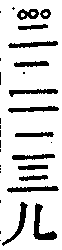
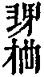
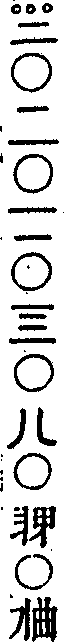
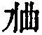

華巖聖可禪師語錄卷二
丁巳冬結制張自新等請上堂爐炭緋紅為鎔頑鋼鈍鐵砧槌網密要打利劍銛鎗設使本有現成何妨重烹再鍊若是躍冶自況徒勞爛額焦頭遂驀拈拄杖卓一卓喝一喝度與侍者云暫教放在幽窗前閒日與君重打算。
化主光體率渝城眾鄉長送毘盧佛入山請上堂問未出母胎度人已畢因甚又有者翻起倒師云河源萬里進云即如眾鄉長跋涉送佛入山得何功德師云隄高百尺乃驀拈拄杖打圓相云大眾見麼毘盧遮那佛說法已竟若於此見得不消德玉重說偈言其或未然德玉落第二頭與諸人打之遶一上要會毘盧遮那來歷麼發足滇海經涉黔陽不御風雲豈待車馬東山水上行西河火裏坐阿誰藏身北斗薰風推送南來渝中兩月淹留檀那一朝奮發麻三斤約束全軀竹筋鞭勤策正道舁奉斬新華座幻出仍舊主人非我多兩片皮緣他少一口氣雖爾無法可說要且有儀可觀相好八萬四千光明普天匝地為祥為瑞福國福民即不無只如今日化主率眾檀越旛蓋溢目香火蒸雲迎的迎送的送煥耀梵宇光輝佛日一句作麼生道落華臺上重鋪錦瑪瑙階前布玉沙卓拄杖下座。
黃之尚生日請上堂你有拄杖子我與你拄杖子泥多佛大水漲船高之尚之母極樂逍遙你無拄杖子我奪你拄杖子不掛本來切忌未生之尚之壽如崗如陵者兩判語與芭蕉拄杖還有契分也無若有契分則止止不須說我法妙難思若無契分老僧同黃之尚乘芭蕉拄杖子入無邊香水海去也還委悉麼昨日如心相告周生直念不差大家護惜常住斗米換箇冬瓜。
胡悟聖請上堂你有拄杖子與你拄杖子高高築牆你無拄杖子奪你拄杖子深深掘塹芭蕉用處畢竟如何保得他人腴田萬頃難免自家窮無一線還會麼聽取一偈黑漆電疾劈脊血滴顧左右云咦。
曹文秀等請上堂佛法二字向下說時直饒文殊普賢現大人相以虛空為紙大地為硯須彌為筆濺四海水書老僧所說至樓至佛出世及窮未來劫亦書說不盡向上說時不消拄杖一默遂顧拄杖云且道拄杖子有甚麼長處。
黃光闊請上堂帕子崖前一片石四方八面一般寬拈來度與黃光闊歲歲今朝作飯錢。
長至敏松請上堂陰陽無氣律管不應飛灰天地有情梅花故開笑口青宮世子郊外扶犁先王閉關一人有慶洞山此日拈果慈明今夜放參且道待老山中野人畢竟安排箇甚遂以拄杖打圓相于中書一雲字云大眾休得眼華老僧終不杜撰。
佛成道劉澤民請上堂六年忍苦住寒山筍膝巢顱安不安今日長連床上客全三全七坐猶難。
上堂釋迦彌勒猶是他奴他是誰奴郭居士飯錢莫只靠老僧▆家還始得眾無對師乃摑口一下。
解制記來請上堂舉起拂子云拂子有情豎起諸人將不去拄杖無力靠下那箇肯承當所以九十日中按圖索馬三箇月內緣木求魚遂以拂子作此云老僧不免為八字打開劃斷鐵限高啟翳[巾*廉]令汝等眼蓋乾坤氣吞宇宙去復云住住只如鐵蛇橫古路又作麼生去乃拋下拂子。
戊午冬開鑪王仲請上堂紅似榴花火一鑪徹天徹地徹雲居人人鍊就鐵肝膽問你眉毛生也無。
無塵大空請上堂橫刀且斷真人足織女攀弓欲上弦紅日一輪從古正草之上下自相連良久云雖然如是早曲了也莫將閒學解埋沒祖師心。
長至上堂舉石霜冬日榜僧堂門作此其下註云若人識得不離四威儀中首座見云和尚今夜放參師云首座道放參且置石霜作此老僧二十年不會今日穿鑿得箇拙頌舉似諸人大家鏟削看眾藝文淵六七庫無位真人一喝收直指心宗如是法石霜榜上看根由喝一喝下座。
新戒法本請上堂召法本本應諾復搴起袈裟角云會麼本云不會師云此是佛涅槃後迦葉尊者持上雞足山中入大寂定七十俱胝五十六百歲以待慈氏底即今慈氏未下生迦葉未出定此個從甚處得來良久云秪是不歸歸便得五湖煙景有誰爭。
解制上堂舉南泉道老僧自小牧一頭水牯牛擬向溪西牧不免食他國王水草擬向溪東牧亦未免食他國王水草不如隨分納些些總不見得試問大眾既是納些些云何道不見得既是不見得何故又道納些些淆訛在甚處老僧者裏於九十日內也牧得一群水牯牛雖爾水草均調其實欄棬偪隘不免將東夔西益南遵北果作一欄棬亦隘東海岱西吐番南五嶺北長城作一欄棬亦隘將四天下作一欄裷亦隘驀以拂子打圓相云只得將萬億佛土無邊妙華光香水海作一欄棬去也亦任他掉尾搖頭昂藏鼻孔瓮中不怕走卻鱉。
己未開爐上堂顧左右云八萬四千生鐵漢通身為爐諸根炭無明火種著些些鍊億山河成一片驀拈拂子召大眾云喚甚麼作無明火種遂折疊拂子吹兩吹云若是不顧危亡的只教他肝腸似易眉目悄然若是貪生畏死之流早已爛額焦頭無你迴避處乃以拂子度與侍者云收起火種。
長至上堂斗柄北指復見天心春信南枝暖啟地肺一陽初動嵩嶽之壽宜呼萬物未生塗山之梨可獻以斯福國祐民以斯保障方土即不無只如華巖院裏老僧長連床上學士枯木其形墻壁其心如何通信仲冬莫言無煖氣陽春盡洩不萌枝。
解制上堂問如何是奪人不奪境師云老僧即主杖進云如何是奪境不奪人師云主杖即老僧進云如何是人境兩俱奪師云倚墻靠壁時薦取進云如何是人境俱不奪師云閒持主杖松間立笑問客從何處來問如何是結制師云解也進云如何是解制師云畫斷鐵限乃云三個月九十日一千零八十時眉毛彷彿鼻孔依俙同千百億化身之有相類十八高賢之無為鐵壁銀墻枯情乾識收心放膽掌電喝雷事既功圓行滿理合展目揚眉放全機于方外收露布于懷中即不無秪如不動腳跟而行千里不出戶庭而遍塵剎一句作麼生道有翼石虎來劫外無毛鷂子拍天飛。
佛宇寺玉初師送僧伽黎請上堂舉海舟慈祖訪東明旵祖于古道山扣關而問曰無上福田衣甚麼人得披明下座打一掌舟云四大非有五蘊本空作麼生明又掌舟云一掌不作一掌用又作麼生明又掌明見得海舟神色不變稱譽道我住古道山二十年今朝只見者漢遂以袈裟與之舟辭曰某不為衣來師云德玉謬解道慈祖大似眼觀灘浪失卻手橈自己話頭渾然忘卻既問無相福田及其與之卻又不受恁麼會又爭得殊不知明祖乃醉後添盃慈祖乃飯飽弄箸耳今日玉初上人將師所授衣秘惜已久特捨請法大類乎此亦似飯飽弄箸來請老僧出季而關升曲彔木出東轉西一上一下不可徒然還當得醉後添盃也無乃揲袈裟角云若將耳聽終難會眼底聞聲方始知。
庚申冬結制上堂往歲有檀那請我陞此座今歲無人請秪想挨排過所以病老僧開口無法說喝一喝云各人自薦取鼻孔下頭大。
佛成道九超請上堂豎起拂子召大眾云會麼此是九超尋常用底鐵火叉也日日剔柴撥火朝朝辦生作熟供養諸人不獨今朝也九超用底即是世尊今朝悟底至于塵沙國土普世界叢林世尊無一處不是今朝一齊而悟不獨華岩也如是舉揚若單為聖節則孤負九超若單為九超又孤負聖節畢竟作麼生遂以拂子擊几案兩下云兩彩一賽。
乾州李別駕三元章臺諫請上堂問郭功輔截江訪白雲于海會是何意旨師云四壁光吞蓬戶日進云白雲問功牛淳乎功曰淳矣白雲叱之功拱而立雲曰淳矣淳矣淳在甚處師云一缾香熟地爐茶進云即今二護法遙來相訪請和尚說法且道與功輔訪白雲是同是別師豎拳云會麼進云不會師云苟非意外相知者徒把空拳豎向他進云恁麼則水向石邊流出冷風從花裏過來香師云且喜薦得乃云萬疊巒疏一逕遙千株松續斷山腰今朝何幸來雙轡起我殘荒破寂寥舉臨濟同普化到施主家齋濟問化云毛吞巨海芥納須彌為是神通玅用為是法爾如然普化踏倒飯床濟云太麤生次日又到施主家齋濟云今朝何似昨日化又踏倒飯床濟云得得太麤生化云瞎漢佛法說甚麼麤細濟乃吐舌師云普化兩次踏倒飯床若是神通玅用臨濟不合道他太麤生若是法爾如然臨濟不合吐舌二老發明黃檗宗旨即不無爭如我李章二公王臣蹇蹇匪躬之故不畏蜀道之難登劍閣而識張載之銘宿釣魚而知二冉之指穿縉雲涉字水來此江州國事之餘得得來山供佛飯僧請法不懈俾老僧舉古舉今演揚佛祖正法誠哉希有看他二公一面勤勞王事一面墻塹三寶如斯神通玅用誰敢道細道麤豈不超他古人頭地者事且止因齋慶讚報答二檀祝國祐民鞏固江山一句作麼生道北門函固金鎖鑰南來劍益萬里城。
陳宗富薦妻請上堂驀豎拂子云渾沌初分開柳條無文心印綻桑苞女媧昨日補天漏鍊得雲根上九霄擊拂子一下(時正月廿三日也)。
解制上堂問大通智勝佛十劫坐道場因甚佛法不現前師云業識未盡進云因甚不得成佛道師云待汝業識盡時向你道僧無語師豎拂子云會麼僧云不會師云凡老僧所說不可作實法會復以拂子擊几案云但與麼會便下座。
辛酉冬結制李承應請上堂佛法遍在一切處既遍在一切處還有針鋒許芥子許不周遍處也無若有即非佛法也恁麼說話忽有箇漢出來拽將下座好搥腳折不為分外良久云住住老僧非是壓良為賤卑視諸人老僧有箇驗法可以作證秘魔見人來便以叉叉住云道道道得也叉下死道不得也叉下死速道速道擬議便叉出慈明室內常安一水盆盆上置一劍傍著一緉草鞋僧纔入便云咦僧擬議便趁出老僧恁麼舉妄想得一個撞著露柱瞎漢出來承當總不見有也驀顧維那喝一喝下座。
冬至日上堂石霜揭出榜文為蛇腹下畫足洞山徹退果桌向龜背上拔毛二老恁麼為人汝等作麼生會問德山拓缽出方丈意旨如何師云為汝不薦進云雪峰與麼老漢為甚默然歸室師云欲隱彌露進云覓火和煙得擔泉帶月歸師云你見甚麼與麼道進云德山道你不肯那頭密啟其意啟甚麼意師云老漢出醜進云不然腦後一槌堪著力到頭雲足覓山歸師云是頭歸是你歸僧便喝師云老僧也出醜進云因甚師遭徒記師云如蟲蛀木偶爾成文進云也是月滿還虧欠火猛不久然師云是何言也大千沙界海中漚一切聖賢如電拂乃云石霜榜文老僧一一為汝等註破唯此個註不得既是六箇註得因甚此個註不得要再打一箇有甚麼難咦。
解制鄭明政鄭守能請上堂九十日前如何鼻孔雙垂正當九十日如何雙垂鼻孔今則九十日後也又作麼生穿卻鼻孔衲僧家的鼻孔東西十萬南北八千不能比其寬狹過去未來現在盡三世際不能擬其礙通甚麼人敢穿衲僧鼻孔乃顧拄杖云珍重撩天拄杖子應知深淺與高低。
省山維那薦亡弟念先請上堂舉僧問雲門如何是塵塵三昧門云缽裏飯桶裏水師云者僧於此瞥地去雲門可謂功不浪施者僧于此不瞥地因甚默然而休念先禪人於此履踐得入斯門生前面目儼然現在顧左右云大眾還見麼若以父母生眼見是凡見不以父母生眼見是聖見愛聖憎凡生死海裏浮沉既不如此且道如何與他相見驀拈拄杖云來也只見子形不聞子聲復卓一下云只聞子聲不見子形又卓一下云細無不入大無不包其直如箭其利似刀所以三平得中成聖臨濟被拂如蒿又卓拄杖兩下。
曾光省請上堂召省近前云你未出門時老僧已為汝說一念回觀便同本得法了也出門時已為你說舉足下足無非道場法了也既到者裏已為你說三皈依近事男法了也你請老僧復為說法說何等法耶老僧忖你意謂此是化城終非寶所不入驚人浪難逢稱意魚必欲得上上法爾乃驀拈拄杖卓兩下云十方世界平如掌一條官路直如弦珍重眼前緇素輩殷勤來踏上頭關。
雙桂忌辰慈雲价南大士請上堂卓拄杖兩下顧左右召眾云汾陽喫一臠雙桂喫一世葉縣接浮山惟以水漉地棒棒棒德山喝喝喝臨濟喫肉斷慈悲打罵乖佛制況今學道人作匹事間耳不惟不肯疑且亦不解舉復卓拄杖云舉已舉了且道作麼生疑疑斷大慈悲佛性種子耶疑打罵耶聽取一頌無影樹子一高株葉葉枝枝還自扶方便若干差別智悟來毒藥亦醍醐。
壬戌冬結制八德大士請上堂舉南嶽讓參六祖祖問甚麼物恁麼來讓無語依止六載祖一日又問云甚麼物恁麼來讓云說似一物即不中祖云還假修證否讓云修證即不無染污即不得近時禪者設或老僧問著甚麼物恁麼來他即挺身向前請和尚鑒或豎一拳或展一掌或拂袖便行如斯鹵莽怎能相契你看他古人參則真參悟則實悟靠個話頭六載之久心地開朗出言吐語有甚縫鏬只緩緩低對道說似一物即不中六祖又復驗云還假修證否若是而今禪者便道不假修證或喝一喝云猶有者箇在發虛不少你看他讓祖是諦當悟證有底蘊的人只答道修證即不無染污即不得若是悟證不諦當怎能如此即今禪者就此爐錘正好用力求個實在諦當證悟處不得以太平無事為安樂纔有安樂之念便成染污切忌切忌下座。
大空師請上堂問六祖得脫獵網尚登毘尼因甚丹霞掩耳而去師云[竺-二+欺]箕有唇進云高沙彌拂袖未審不肯阿誰師云貓兒尾後繫研槌乃云芭蕉道你有拄杖子我與你拄杖子你無拄杖子我奪卻你拄杖子老僧始觀如湧泉得相續心漸次觀如長江得流注心而今老僧究竟看來如大海一樣得飽滿心恁麼舉揚與諸方評唱如堰鼠飲河無過滿腹而已乃左右顧視云汝等諸人作麼生會。
進斯請上堂以拂子召進斯云汝昨日請老僧今朝為汝說法與汝說父母未生前底法彼自無瘡勿傷之也與汝說父母生後法六根具足欠少甚麼不免舉則現成公案暫留大眾觀聽昔迦葉問阿難世尊在日嘗道一言一句該括三十七品無邊法義何者是阿難云諸惡莫作眾善奉行自淨其意是諸佛教汝還會麼此四句三歲孩兒也道得八十翁翁行不得諸惡莫作十重四十八輕也眾善奉行三十心十地也如是莫作如是奉行自淨其意可以自利如是莫作如是奉行是諸佛教可以利人雖然如是不及水潦參馬祖祖一蹋潦蹶起云百千法門無量玅義今向一毛頭上識得根源去猶較些子以拂子擊一下云截斷葛藤。
總府陳公子發賢工部陳公子光哲叔姪脫白請上堂曾將名字寄吾廬八載形同事不虛賢母倚門而日望待親一杖墮金魚綠袍頻換紫袈裟記得靈山咐囑麼祖禰蜀燕添五福兒孫南北益三多。
上堂召斷冰師及葉侯余三人近前云爾等乍來即請老僧開示老僧默然知賓道乞和尚開甘露門利濟群品老僧便笑今又請老僧陞于此座為爾等說法老僧點頭如是一默一笑一點頭已是葛藤不少那堪搖拽舌頭更忉忉怛怛也耶雖然如是汝當善聽利濟群品不易開甘露門實難何謂甘露有世間甘露有出世間甘露何謂世間甘露墻壁瓦礫日月星辰山河草木眼之甘露也鐘鈴鑼鼓歌舞技唱耳之甘露也栴檀沉水鼻之甘露也酸鹹苦澀舌之甘露也冷煖觕細身之甘露也思量分別意之甘露也此是世間甘露也何謂出世間甘露照破諸色皆空眼之甘露也返聞聞性耳之甘露也離出入息鼻之甘露也緘默寡言舌之甘露也恒寂不動身之甘露也言思道斷意之甘露也此出世間甘露也若門則應不言而喻亦有說焉法華云惟此一門而復陜小祖師道入此門來不存軌則楞嚴云十方薄伽梵一路涅槃門水潦道一毛頭上百千法門如是等門若於此會得就如樊噲之踏鴻門若于此不會則仍舊鄭州出曹門老僧不是一說便了直要汝等諸人各自努力便下座。
副臺蔣元魁母難請上堂顧左右以拂子打圓相召眾云會麼此乃蔣護法請啟也且道啟中說個甚麼他道莫問當年金犢聊為此際趙州此不是山僧為蔣護法說法反是蔣護法為山僧等說法也只如金牛飯汝等諸人作麼生喫趙州茶汝等諸人作麼生飲忽有人出來道喫已喫了飲已飲了饒汝喫了飲了更要汝吐出始得還會麼上上之人舉起知有中下之流未免心頭茫昧到者裡只好與汝等說箇譬喻此事如人學射未慣習之時高一箭卑一箭左一箭右一箭前一箭後一箭千箭萬箭總射不上及乎慣習之久一箭中上紅心高卑左右上下前後就如射大地一般無有中不著者且道驗在于何驗在慣習之久今日蔣護法久習已熟有穿楊貫虱之巧一箭射到華巖正中三世諸佛圓光之中佛也射著祖也射著老僧也射著大眾也射著就如射虛空一般無有射不著者因此一箭之後前箭後箭相續不斷只教他三世先靈咸超覺岸現前檀越益壽延年無有窮盡永為法門金湯復顧左右云只如老僧和汝諸人覿體承當袒胸受箭一句作麼生道以拂子自點胸云接饑枝上垂金果消渴泉中湧碧流放下拂子下座。
春日上堂萬山林木森而高一道嶮巇曲且遙櫱筆柁桃華正茂看來無地著塵囂。
解制上堂華巖者裡一冬三箇月牧得一群水牯牛水草雖不甚調勻卻也頭正尾正驀以拂子打圓相復劃破云今日為他八字打開又以拂子作鞭撻勢云叱叱一齊趁出只是不得犯人苗稼若是犯人苗稼鼻孔上被人穿上一條芒繩不得自由莫怪老僧今日不與你門說破喝一喝。
癸亥冬結制上堂紅爐云何施設為煆鈍鐵頑鋼倘有躍冶之金不妨就中[跳-兆+孛]跳有麼有麼問華岩堂上大彰旗鼓雲集四來最初一句作麼生露布師云莫浪聞進云學人無耳聞個甚麼師云相隨來也問解撾塗毒鼓能舞太阿鋒且道阿誰境界師云是無面目人境界進云無面目有何境界師云喪卻窮性命乃舉趙州訪一菴主問有麼有麼主豎起拳州云水淺不是泊船處又訪一菴主問有麼有麼主亦豎起拳州云能縱能奪能煞能活便禮拜師云有著前菴主豎拳云突出難辨著後菴主豎拳云好本多同因何趙州肯一箇不肯一箇著云舌頭還在趙州口裏只要磨稜合縫便了也與此個事有何交涉正所謂醍醐上味為世所珍遇斯等人翻成毒藥只須努力體取好審實悟證自在可期。
光銳請上堂舉德山拓缽上法堂富嫌千口少雪峰晒飯巾次云者老漢鐘未響鼓未鳴拓缽向甚麼處去獅子窟中無異獸德山便歸方丈貧憾一身多峰舉似岩頭頭云者老漢未會末後句在旃檀林中豈有雜草山使人喚頭至云你不肯老僧那頭密啟其意父為子隱子為父隱山次日上堂果與往不同雲遍虛空蓋覆不著頭撫掌云雖然如是也秪得三年活家富小兒驕遂顧左右云老僧恁麼批判還穩當也未良久云老僧只管鑽龜打瓦一任諸方貶剝。
長至上堂問今朝冬至節拈香祝聖朝未審太平時主人在甚麼處師云深宮裏進云怪得六臣班不序無路奉聖顏也師云古殿苔封進云如斯則化日初長咸增意氣師云但得皇風成一片不知何處是封疆乃驀顧左右云大眾不解慈明貼榜文不作洞山徹果桌遂拈香插入爐中云只拈一片老枯檀奉祝當今多壽福。
玄度大師請上堂老僧若作藥山維摩靜寂寂的不吐一辭卻墮在嘿裏若作雪竇石門絮絮叨叨水漉漉的又墮在語裏不墮嘿不墮語如何相為乃摑口一下云口是禍門。
上堂舉鹽官上堂云虛空為鼓須彌為槌甚麼人打得眾無對後有僧舉似南泉泉云王老師不打者破鼓法眼別云但道不打自然是破鼓應菴華祖云南泉撥亂飛灰法眼埋兵掉鬥更無一人性燥下得一槌乃顧左右云漆桶參堂去師云南泉打破鼓法眼補破鼓華祖性燥下得一槌又何嘗打著爭如今日悉知上座下者一槌使得老僧與汝諸人就如虎丘弔桶一齊都到食堂裡看觀世音將錢來買餬餅放下手卻原來是饅頭遂以拂子打一圓相云者是虛空鼓於中著一點云者是須彌槌顧左右云還有麼試再打看。
上堂昨日大器師同知賓上方丈云明日某甲薄設粗齋懇請和尚登臨華座垂示法語利益眾生老僧彼時嘿然至晚大器同維那領眾持啟重重懇請老僧亦默然世尊掩室于摩竭淨名杜口于毘耶達磨面壁冷坐九年藥山陞堂不吐一字華岩兩次嘿然還有契分也無若有契分何勞今日再鼓兩片皮水漉漉的作甚若無契分好聽註▆舉雪峰問德山從上宗乘某甲還有分也無德山便打云道甚麼峰云不會明日請益山云我宗無語句亦無一法與人峰于言下大悟師云老僧昨日恁麼嘿今日恁麼舉并不曾吐露一詞汝等諸人悟與不悟且置且道還有利益也無聽取一頌師子教兒不用別教兒一味迷蹤訣師兒反躑解翻身總是恰時而應節喝一喝下座。
行能薦親請上堂問文殊為七佛之師因甚出女子定不得師云如水益深進云下界罔明因甚卻出女子定得師云如火益熱僧禮拜師云切乃云虛空尺量風線繫肩擔父母把空行父母未生恒著念四行能公能不能以拂子擊几案兩下。
重慶鎮左都督王差官偕楚成上人請上堂地僻山荒野逕遙何緣專使屢勞勞爍然明德光如日幾度分暉暖我曹遂合掌云願護法王公多福便下座。
新戒請上堂眼不著沙山河大地向甚處著而云眼戒于色耳不著滴瀑布潺湲向何處著而云耳戒于聲乃至意不著思三世十方向甚處著而云意戒于法眼不動不搖耳不動不搖乃至意不動不搖色不動不搖聲不動不搖乃至法不動不搖恁麼如水投水似空合空即不無此個不動不搖底畢竟有甚奇特拋下拂子云唯此一事實餘二則非真。
解制楊繼芳請上堂問約束布袋時如何師云放開好進云解開布袋時如何師云出頭天外看誰是我般人進云還許觀山翫水踏月穿雲麼師云莫亂走進云恁麼則隨緣體會任運無憂去也師云你不得做矮人觀場問不求法脫不被法縛是甚麼人境界師云怪得灑灑落落底進云結制時不減一物解制時不增一物結底是解底是師云瑕生也進云解制後還有為人處也無師云有進云畢竟以何法為人師云善為道路良久乃云不縛不脫灑灑落落不增不減瑕生照膽為人一句善為道路喝一喝。
上乘知事為陳資進父子披剃請上堂天命離塵老不老叱烏脫俗小非小但能識得鞭羊法那畔今時咸恰好如何是鞭羊法扁擔作笏。
載升薦師請上堂作此○云天人群生類皆承此恩力且道何者是靈源恩力載升錫飛二上座承來底慧耳上人承來底復劃破云承來底是甚麼我見燈明佛本光瑞如此。
華巖聖可禪師語錄卷二終